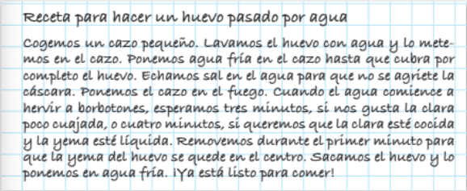
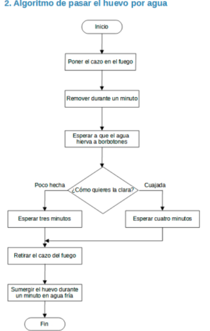

Ahora es el momento de poner en práctica todo lo aprendido en esta situación de aprendizaje creando el algoritmo de tu receta favorita.
Imagina que tienes la receta de tu plato favorito y quieres prepararlo. Lo mejor es que los pasos de la receta sean sencillos, precisos y estén ordenados. Recuerda que mientras más ingredientes y más complicada sea la receta, mas difícil va a ser crear su algoritmo. Así que no elijas una receta con muchos ingredientes.
Vamos a practicar siguiendo los siguientes pasos:
1º. Escribe la lista ordenada con los pasos para realizar la receta.
2º. Dibuja el diagrama de flujo en tu cuaderno.
Este ejercicio es individual, lo realizaréis cada uno en vuestro cuaderno.
Aquí tienes un ejemplo que te sirva de guía para elaborar tu algoritmo.

